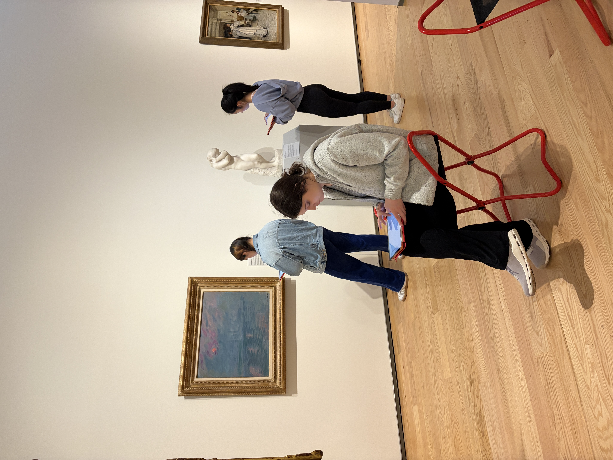
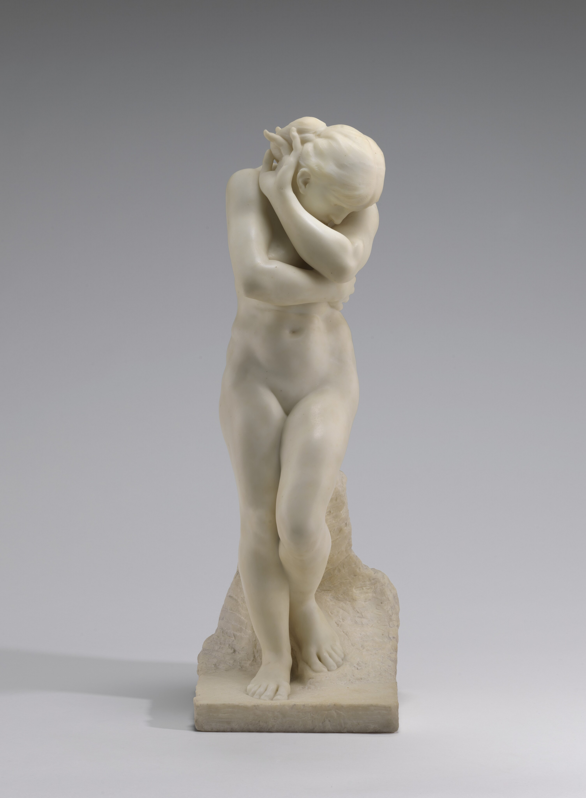
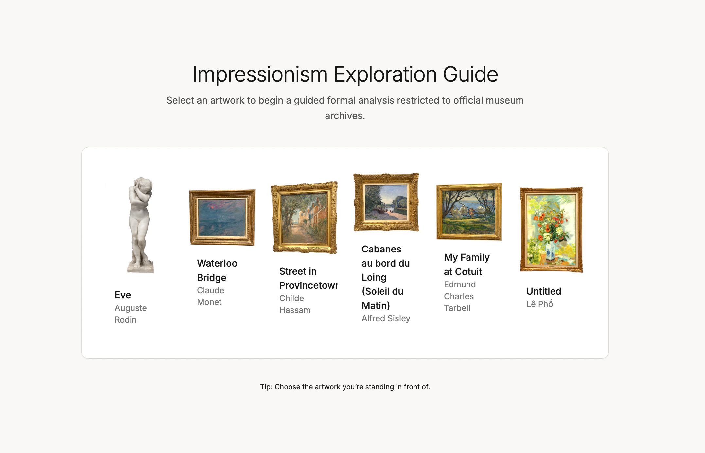
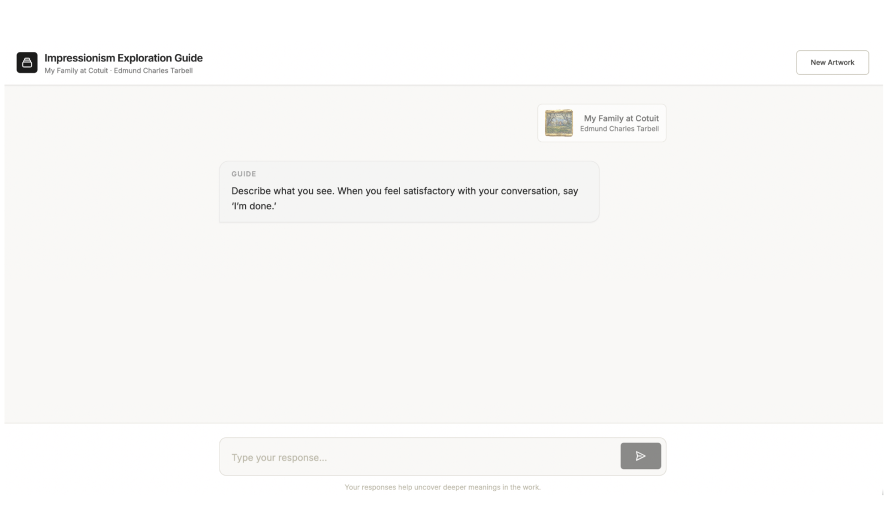
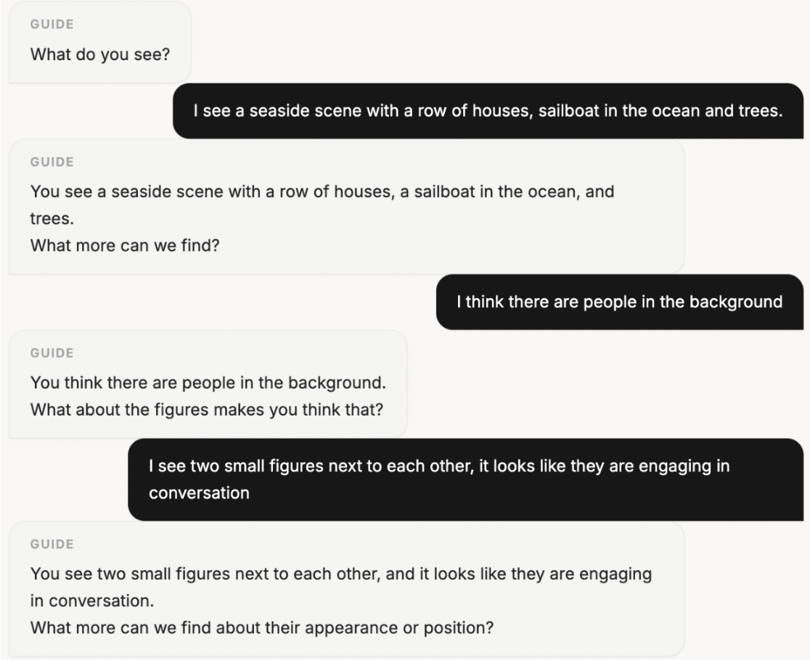
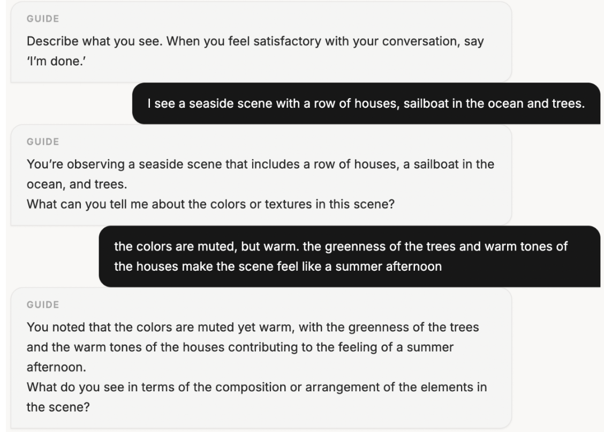

AIrt Guide · ACM C&C '26
Designing Conversational AI that Scaffolds Art Beyond Initial Impressions
The Design Problem
Most museum AI tools function as information delivery systems, optimized for navigation and retrieval, not reflection. This work asks a different question: what if a conversational AI helped visitors articulate and develop what they already notice, rather than redirecting them toward what the system thinks they should attend to?
What I Built & Found
I designed two versions of the AIrt Guide, a chatbot built on two established museum education pedagogies, and studied how each shaped observation, articulation, and engagement across 24 participants at the Davis Museum. The study surfaced clear value in conversational scaffolding and equally clear design failure modes when that scaffolding becomes inflexible.
The Design Challenge
Existing museum chatbots prioritize navigation, information retrieval, and gamified interaction. They treat art engagement as a knowledge transfer problem. But meaning-making in front of an artwork is a creative act: personal, iterative, and resistant to definitive answers.
How might conversational AI scaffold interpretive creativity in a museum gallery, without becoming the voice of authority it was designed to replace?
The specific tension the system had to navigate: persistent follow-up questions can deepen observation, but the same structure, applied too rigidly, overrides the user's own line of inquiry, creates conversational loops, and gradually distances visitors from the emotional experience of viewing the work.

The AIrt Guide
The system presents six Impressionist works from the Davis Museum at Wellesley College. Users select the artwork they are standing in front of, and a conversational interface appears alongside it. The chat interface is visually identical across both conditions; the variable is the underlying conversational logic, not the visual experience of the tool. This was a deliberate design decision to isolate pedagogical structure as the thing being studied.
The Collection
Six works from the Davis Museum's Impressionism gallery were included in the study, each paired with a museum-authored Object File that grounded the chatbot's responses.



Two Pedagogical Conditions
Visual Thinking Strategies (VTS)
- Opens with: "What do you see?"
- Classifies responses as description, unsupported interpretation, or evidence-based interpretation
- Follow-ups either expand observation or request visual justification
- Avoids introducing interpretation; sustains ambiguity
- Emphasizes open-ended, participant-driven discovery
Formal Analysis (FA)
- Opens with prompting a descriptive observation of formal elements
- Guides attention systematically: color → light → spatial structure → brushwork
- Each turn paraphrases the user's observation, then introduces a new formal dimension
- Emphasizes structural coherence and analytic progression
- More instructional, closer to an art history class format
Safeguarding
Both conditions operate under strict information controls: all responses are grounded in museum-authored Object Files for each artwork. Out-of-scope queries are redirected to museum staff rather than answered. This was an intentional preliminary design choice to reduce hallucination risk, and it produced a real limitation in the results, discussed below.


Conversation Flow Examples


Research Approach
Study Design
This is a comparative evaluative study: two versions of the same system with different underlying logic, tested against each other to understand how pedagogical framing shapes behavior and articulation. Students were assigned to one condition (between-subjects, n=10 per condition), which prevents order effects. Four museum faculty and staff experienced both conditions sequentially, functioning as a within-subjects expert panel for richer qualitative comparison.
There is no no-chatbot baseline condition; the study can tell you how the two conditions differ from each other, and what participants said qualitatively, but cannot directly address the chatbot's ability to improve engagement relative to no chatbot at all. The AReA pre/post survey was included partly to address this: it measures whether the chatbot shifted participant's baseline attitudes toward engaging with art, acting as a partial answer, not a complete substitute for a behavioral baseline.
Methods
Primarily independent t-tests comparing VTS vs. Formal Analysis and arts-experienced vs. non-arts-experienced participants across open-ended written responses.
AReA Pre/Post
Aesthetic Responsiveness Assessment Likert surveys administered before and after the session, analyzed via paired t-tests to measure shifts in attitudes toward art engagement.
Parts-of-Speech Ratios
Nouns, verbs, adjectives, and adverbs extracted from written responses using NLTK. Expressed as ratios to total word count to compare linguistic framing across conditions.
Keyword Thematic Coding
Responses coded across four predefined categories: visual/formal language, subject matter, interpretive/reflective language, and contextual/comparative language (normalized by word count).
Lexical Diversity (MTLD)
Measure of Textual Lexical Diversity computed at the participant level and compared across conditions and experience groups. Higher values indicate more varied vocabulary.
Word Count & Sentence Length
Total word count and average sentence length measured across all four open-ended response prompts to assess differences in overall expressive output between conditions.
Thematic analysis of group discussion recordings to surface the experiential dimensions that linguistic measures can't capture.
Guided Group Discussion Transcripts
Audio-recorded sessions were anonymously transcribed and analyzed thematically. Guided questions covered: how the chatbot affected visual observation; connection to artworks; sense of the gallery as a whole; and for faculty and staff only, a direct comparison between the VTS and Formal Analysis conditions.
Why This Design
Two conditions rather than one make visible how conversational structure shapes interpretation; not just whether AI helps, but which kind and for whom. The mixed-methods approach was necessary because the core questions are partly behavioral (does language change?) and partly experiential (does the interaction feel meaningful, approachable, useful?). Quantitative linguistic measures capture what changed; qualitative discussion analysis captures why: the social dynamics, the moments of discovery, the points of friction that numbers can't surface.
What We Found
Attitudes Toward Art Did Not Significantly Change
Pre/post AReA scores showed no significant changes for most items, suggesting the chatbot did not artificially inflate or disrupt participants' existing orientation toward art engagement. This is a reassuring null result: the system scaffolded experience without manufacturing enthusiasm that wouldn't otherwise be there.
One exception: arts-experienced students showed a significant increase on Statement 12 (sense of connectedness or oneness when viewing art) from pre (M=3.00) to post (M=3.44), t(18)=2.53, p=.035. This suggests that for participants who already had a framework for engaging with art, the conversational tool may have deepened momentary reflective experience.
Three Modes of Value — Both Conditions
Qualitative discussion analysis surfaced three consistent modes of value across both conditions, and four equally consistent limitations:
Deeper, longer observation. Persistent follow-up questions prompted participants to notice details they would not have attended to independently: texture, shadow, spatial relationships, compositional choices.
Articulation through paraphrasing. The system's tendency to reflect responses back in more structured language helped participants clarify and sometimes revise their own interpretations. Especially valued by participants less confident in art vocabulary.
Low-stakes interaction. The non-human conversational partner reduced social pressure, allowing participants to share partial observations without worrying about being judged or misunderstood.
Conversational looping. The structure modeled on pedagogical questioning created circular exchanges; participants felt they had reached the limits of what they could say, but the chatbot kept asking.
Structured questioning overrode user-led exploration. When participants wanted to shift topics, the chatbot continued probing the same dimension. The system prioritized its own analytical categories over the participant's line of inquiry.
Emotional engagement underserved. The chatbot was effective for analytical observation but rarely acknowledged or extended participants' emotional responses to works. Some participants described the continued questioning as distancing them from their initial feeling about a piece.
Device-based interaction divided attention. Participants spent more time looking at the iPad than the artwork itself. The interaction also reshaped how they experienced the gallery, from a cohesive spatial environment to six discrete case studies. One participant described forgetting "the presence of the gallery or other people."
Participant Voices
"Only she's smooth, but the rest of it isn't. I wouldn't have focused on that if I didn't interact with the chatbot."
"It felt more low stakes… I didn't feel like I had to write it in a specific way or be afraid that I was misunderstood."
"At first I felt a little more connected to the artwork… but the more I talked to the chatbot, the more it kind of took away from the more primitive feelings."
"I spent more time looking at the iPad rather than looking at the art. I did feel a little disconnected, but it definitely made me sit on one piece longer."
Condition Differences Were Targeted, Not Broad
No significant differences between VTS and Formal Analysis in overall lexical diversity (MTLD), total word count, or average sentence length; suggesting neither approach broadly altered the richness of participants' writing. The two conditions produced subtly different linguistic behaviors in specific contexts, rather than fundamentally different expressive outcomes.
t(18)=−2.54, p=.022
t(18)=2.15, p=.050, more object-focused description
t(18)=2.44, p=.028, more action-oriented inquiry
VTS exception: among arts-experienced participants only, VTS produced significantly longer average sentence length in Q2 (favorite work): t(7)=−2.67, p=.032, suggesting more elaborated, expressive responses when participants had existing art vocabulary to draw on.
Experience Level Moderated Effects
Significant condition-based linguistic differences emerged only among arts-experienced participants. No significant differences were observed for non-arts-experienced participants across any measure. This suggests that conversational framing influences how people articulate responses when they already have a framework for discussing art for participants without that framework, both conditions appeared to support basic observation and description at similar levels, with paraphrasing functioning as conversational scaffolding rather than producing distinct stylistic shifts.
Given the small sample sizes and exploratory nature of these analyses, these patterns should be interpreted cautiously and warrant further investigation.
Design Principles for Conversational AI in Learning Contexts
These four principles are derived from the study's findings and limitations; each addresses a specific failure mode or opportunity that the results surfaced.
Flexible Scaffold Pedagogy & Identify Conversation Endpoints
Open-ended prompting supports exploration, but without natural conversational boundaries it creates repetitive exchanges. Systems need lightweight milestones or implicit signals that allow the AI to recognize when meaningful engagement has been achieved and let the user conclude gracefully.
Support Safe Contextual Interactions
Restricting the chatbot to Object File content reduced hallucination risk but created moments where the conversation stalled on legitimate questions. Future systems should explicitly signal the limits of their knowledge and offer structured pathways to contextual expansion, rather than redirecting to staff or going silent.
Connection Across Works and Ideas
The per-artwork structure encouraged deep focus on individual pieces but disrupted the gallery as a cohesive whole. Systems that surface thematic or compositional connections across works could support a more integrated experience, helping visitors trace ideas rather than treating each artwork as a separate case study.
Flexible Interaction Modalities
Typing on an iPad in front of an artwork divides attention in a fundamentally disruptive way. Voice-based interaction would allow visitors to maintain visual focus on the work. Augmented reality interfaces could eliminate the screen entirely. The modality of interaction should support the spatial and visual demands of the environment, not fight them.
Broader Implications
This research is directly relevant to any product team building conversational AI features in content-rich, attention-demanding environments, not just museums: AI prompting works best when it helps users articulate and develop what they already notice, not when it redirects them toward what the system thinks they should attend to.
The conversational looping problem, where the system keeps pushing when the user is done, is a product design failure that appears in chatbots, recommendation flows, and onboarding experiences across industries. Recognizing conversation endpoints is not a museum-specific challenge.
The experience-moderation finding also has a product analog: users without an existing framework for a domain may not benefit from nuanced conversational scaffolding until more foundational engagement is established. This is an implication from the data, not a direct finding, but it suggests that adaptive scaffolding, which responds to what a user already knows rather than applying the same structure to everyone, is a meaningful design direction.
Finally, the device-attention finding maps directly onto any mobile product used in a physically engaging context. Designing for divided attention and eyes-up interaction is a UX challenge that extends well beyond gallery walls, from retail fitting rooms to cooking apps to navigation to any experience where the user's primary attention belongs somewhere other than the screen.